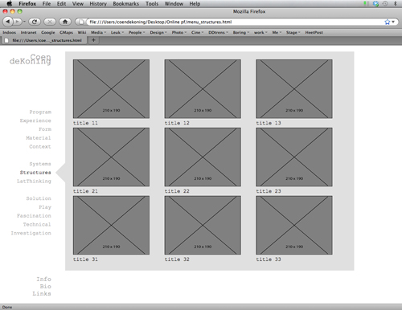
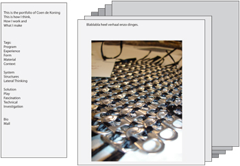
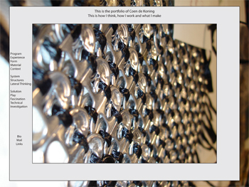
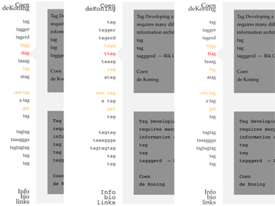
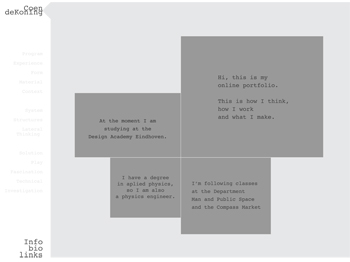
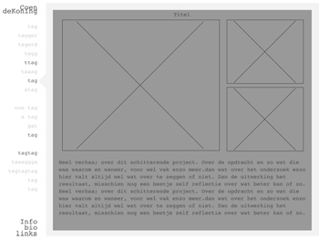
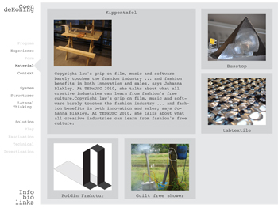

Online Portfolio
The assignment was to make an online portfolio communicating your vision and showing you work.
One of the first things I wanted was to keep away from style for the sake of style. I am fed up with those flashy sites that try to impress the
world with dazzling but mindless graphics. Secondly I wanted to write the site myself, I wanted complete control and understanding of all the
elements. This meant that the site would be very sober in form. The fact that I made it myself does make that you do experience this site as different.
 
 
 